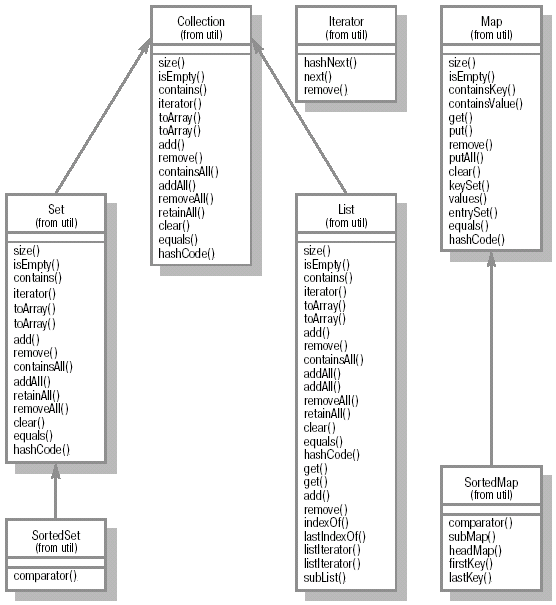
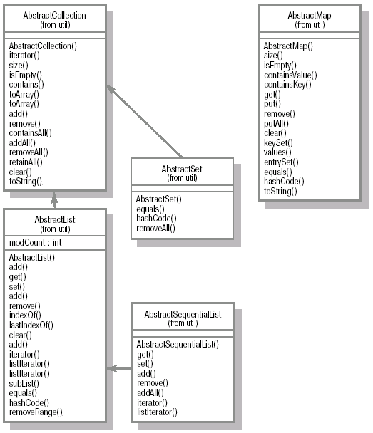

Интерфейс Observer и класс Observable
Интерфейс Observer определяет всего один метод, update (Observable o, Object arg), который вызывается, когда обозреваемый объект изменяется.
Класс Observable предназначен для поддержки обозреваемого объекта в парадигме MVC (model-view-controller), которая, как и другие проектные решения и шаблоны, описана в специальной литературе. Этот класс должен быть унаследован, если возникает необходимость в том, чтобы отслеживать состояние какого-либо объекта. Обозреваемый объект может иметь несколько обозревателей. Соответственно, они должны реализовать интерфейс Observer.
После того, как в состоянии обозреваемого объекта что-то меняется, необходимо вызвать метод notifyObservers, который, в свою очередь, вызывает методы update у каждого обозревателя.
Порядок, в котором вызываются методы update обозревателей, заранее не определен. Реализация по умолчанию подразумевает их вызов в порядке регистрации. Регистрация осуществляется с помощью метода addObserver(Observer o). Удаление обозревателя из списка выполняется с помощью deleteObserver(Observer o). Перед вызовом notifyObservers необходимо вызвать метод setChanged, который устанавливает признак того, что обозреваемый объект был изменен.
Рассмотрим пример организации взаимодействия классов:
В результате работы на консоль будет выведено:
На практике использовать Observer не всегда удобно, так как в Java отсутствует множественное наследование и Observer необходимо наследовать в самом начале построения иерархии классов. Как вариант, можно предложить определить интерфейс, задающий функциональность, сходную с Observer, и реализовать его в подходящем классе.
Коллекции
Зачастую в программе работа идет не с одним объектом, а с целой группой более или менее однотипных экземпляров (например, автопарк организации). Проще всего сделать это с помощью массивов. Однако, несмотря на то, что это достаточно эффективное решение для многих случаев, оно имеет некоторые ограничения. Так, обращаться к элементу массива можно только по его номеру (индексу). Также необходимо заранее задать длину массива и больше ее не менять.
Массивы существовали в Java изначально. Кроме того, было определено два класса для организации более эффективной работы с наборами объектов: Hashtable и Vector. В JDK 1.2 набор классов, поддерживающих работу с коллекциями, был существенно расширен.
Существует несколько различных типов классов-коллекций. Все они разрабатывались, по возможности, в соответствии с единой логикой и определенными интерфейсами и там, где это возможно, работа с ними унифицирована. Однако все коллекции отличаются внутренними механизмами хранения, скоростью доступа к элементам, потребляемой памятью и другими деталями. Например, в некоторых коллекциях объекты (также называемые элементами коллекций), могут быть упорядочены, в некоторых – нет. В некоторых типах коллекций допускается дублирование ссылок на объект, в некоторых – нет. Далее мы рассмотрим каждый из классов-коллекций.
Классы, обеспечивающие манипулирование коллекциями объектов, объявлены в пакете java.util.
Интерфейсы
Интерфейс Collection
Данный интерфейс является корнем всей иерархии классов-коллекций. Он определяет базовую функциональность любой коллекции – набор методов, которые позволяют добавлять, удалять, выбирать элементы коллекции. Классы, которые реализуют интерфейс Collection, могут содержать дубликаты и пустые (null) значения.
AbstractCollection, как абстрактный класс, служит основой для создания конкретных классов коллекций и содержит реализацию некоторых методов, определенных в интерфейсе Collection.
Интерфейс Set
Классы, которые реализуют этот интерфейс, не допускают наличия дубликатов. В коллекции этого типа разрешено наличие только одной ссылки типа null. Интерфейс Set расширяет интерфейс Collection, таким образом, любой класс, имплементирующий Set, реализует все методы, определенные в Collection. Любой объект, добавляемый в Set, должен реализовать метод equals, чтобы его можно было сравнить с другими.
AbstractSet, являясь абстрактным классом, представляет собой основу для реализации различных вариантов интерфейса Set.
Интерфейс List
Классы, реализующие этот интерфейс, содержат упорядоченную последовательность объектов (объекты хранятся в том порядке, в котором они были добавлены). В JDK 1.2 был переделан класс Vector, так, что он теперь реализует интерфейс List. Интерфейс List расширяет интерфейс Collection, и любой класс, имплементирующий List, реализует все методы, определенные в Collection, и в то же время вводятся новые методы, которые позволяют добавлять и удалять элементы из списка. List также обеспечивает ListIterator, который позволяет перемещаться как вперед, так и назад по элементам списка.
AbstractList, как абстрактный класс, представляет собой основу для реализации различных вариантов интерфейса List.

Рис.
14.1.
Основные типы для работы с коллекциями.
Интерфейс Map
Классы, которые реализуют этот интерфейс, хранят неупорядоченный набор объектов парами ключ/значение. Каждый ключ должен быть уникальным. Hashtable после модификации в JDK 1.2 реализует интерфейс Map. Порядок следования пар ключ/значение не определен.
Интерфейс Map не расширяет интерфейс Collection. AbstractMap, будучи абстрактным классом, представляет собой основу для реализации различных вариантов интерфейса Map.
Интерфейс SortedSet
Этот интерфейс расширяет Set, требуя, чтобы содержимое набора было упорядочено. Такие коллекции могут содержать объекты, которые реализуют интерфейс Comparable, либо могут сравниваться с использованием внешнего Comparator.
Интерфейс SortedMap
Этот интерфейс расширяет Map, требуя, чтобы содержимое коллекции было упорядочено по значениям ключей.
Интерфейс Iterator
В Java 1 для перебора элементов коллекции использовался интерфейс Enumeration. В Java 2 для этих целей должны применяться объекты, которые реализуют интерфейс Iterator. Все классы, которые реализуют интерфейс Collection, должны реализовать метод iterator, который возвращает объект, реализующий интерфейс Iterator. Iterator весьма похож на Enumeration, с тем лишь отличием, что в нем определен метод remove, который позволяет удалить объект из коллекции, для которой Iterator был создан.
Таким образом, подводя итог, перечислим интерфейсы, используемые при работе с коллекциями:
java.util.Collection
java.util.Set
java.util.List
java.util.Map
java.util.SortedSet
java.util.SortedMap
java.util.Iterator
Aбстрактные классы, используемые при работе с коллекциями
java.util.AbstractCollection – данный класс реализует все методы, определенные в интерфейсе Collection, за исключением iterator и size, так что для того, чтобы создать немодифицируемую коллекцию, нужно переопределить эти методы. Для реализации модифицируемой коллекции необходимо еще переопределить метод public void add(Object o) (в противном случае при его вызове будет возбуждено исключение UnsupportedOperationException).

Рис.
14.2.
Базовые абстрактные классы.
Необходимо также определить два конструктора без аргументов и с аргументом Collection. Первый должен создавать пустую коллекцию, второй – коллекцию на основе существующей. Данный класс расширяется классами AbstractList и AbstractSet.
java.util.AbstractList – этот класс расширяет AbstractCollection и реализует интерфейс List. Для создания немодифицируемого списка необходимо имплементировать методы public Object get(int index) и public int size(). Для реализации модифицируемого списка необходимо также реализовать метод public void set(int index,Object element) (в противном случае при его вызове будет возбуждено исключение UnsupportedOperationException).
В отличие от AbstractCollection, в этом случае нет необходимости реализовывать метод iterator, так как он уже реализован поверх методов доступа к элементам списка get, set, add, remove.
java.util.AbstractSet – данный класс расширяет AbstractCollection и реализует основную функциональность, определенную в интерфейсе Set. Следует отметить, что этот класс не переопределяет функциональность, реализованную в классе AbstractCollection.
java.util.AbstractMap – этот класс расширяет основную функциональность, определенную в интерфейсе Map. Для реализации немодифицируемого класса, унаследованного от AbstractMap, достаточно определить метод entrySet, который должен возвращать объект, приводимый к типу AbstractSet. Этот набор (Set) не должен обеспечивать методов для добавления и удаления элементов из набора. Для реализации модифицируемого класса Map необходимо также переопределить метод put и добавить в итератор, возвращаемый entrySet().iterator(), поддержку метода remove.
java.util.AbstractSequentialList – этот класс расширяет AbstractList и является основой для класса LinkedList. Основное отличие от AbstractList заключается в том, что этот класс обеспечивает не только последовательный, но и произвольный доступ к элементам списка, с помощью методов get(int index), set(int index, Object element), set(int index, Object element), add(int index, Object element) и remove(int index). Для того, чтобы реализовать данный класс, необходимо переопределить методы listIterator и size. Причем, если реализуется немодифицируемый список, для итератора достаточно реализовать методы hasNext, next, hasPrevious, previous и index. Для модифицируемого списка необходимо дополнительно реализовать метод set, а для списков переменной длины еще и add, и remove.
Конкретные классы коллекций
java.util.ArrayList – этот класс расширяет AbstractList и весьма похож на класс Vector. Он также динамически расширяется, как Vector, однако его методы не являются синхронизированными, вследствие чего операции с ним выполняются быстрее. Для того, чтобы воспользоваться синхронизированной версией ArrayList, можно применить вот такую конструкцию:
Результатом будет:
java.util.LinkedList – представляет собой реализацию интерфейса List. Он реализует все методы интерфейса List, помимо этого добавляются еще новые методы, которые позволяют добавлять, удалять и получать элементы в конце и начале списка. LinkedList является двухсвязным списком и позволяет перемещаться как от начала в конец списка, так и наоборот. LinkedList удобно использовать для организации стека.
Результатом будет:
Классы LinkedList и ArrayList имеют схожую функциональность. Однако с точки зрения производительности он отличаются. Так, в ArrayList заметно быстрей (примерно на порядок) осуществляются операции прохода по всему списку (итерации) и получения данных. LinkedList почти на порядок быстрее выполняет операции удаления и добавления новых элементов.
java.util.Hastable – расширяет абстрактный класс Dictionary. В JDK 1.2 класс Hashtable также реализует интерфейс Map. Hashtable предназначен для хранения объектов в виде пар ключ/значение. Из самого названия следует, что Hаshtable использует алгоритм хэширования для увеличения скорости доступа к данным. Для того, чтобы выяснить принципы работы данного алгоритма, рассмотрим несколько примеров.
Предположим, имеется массив строк, содержащий названия городов. Для того, чтобы найти элемент массива, содержащий название города, в общем случае требуется просмотреть весь массив, а если необходимо найти все элементы массива, то для поиска каждого, в среднем, потребуется просматривать половину массива. Такой подход может оказаться приемлемым только для небольших массивов.
Как уже отмечалось ранее, для того, чтобы увеличить скорость поиска, используется алгоритм хэширования. Каждый объект в Java унаследован от Object. Как уже отмечалось ранее, Object определено целое число, которое уникально идентифицирует экземпляр класса Object и, соответственно, все экземпляры классов, унаследованных от Object. Это число возвращает метод hashCode(). Именно оно используется при сохранении ключа в Hashtable следующим образом: разделив длину массива, предназначенного для хранения ключей, на код, получаем некое целое число, которое служит индексом для хранения ключа в массиве array.length % hashCode().
Далее, если необходимо добавить новую пару ключ/значение, вычисляется новый индекс, и если этот индекс совпадает с уже имеющимся, то создается список ключей, на который указывает элемент массива ключей. Таким образом, при обратном извлечении ключа необходимо вычислить индекс массива по тому же алгоритму и получить его. Если ключ в массиве единственный, то используется значение элемента массива, если хранится несколько ключей, то необходимо обойти список и выбрать нужный.
Есть несколько соображений, относящихся к производительности классов, использующих для хранения данных алгоритм хэширования. В частности, размер массива. Если массив окажется слишком мал, то связанные списки будут слишком длинными и скорость поиска станет существенно снижаться, так как просмотр элементов списка будет такой же, как в обычном массиве. Чтобы этого избежать, задается некий коэффициент заполнения. При заполнении элементов массива, в котором хранятся ключи (или списки ключей) на эту величину, происходит увеличение массива и производится повторное реиндексирование. Таким образом, если массив окажется слишком мал, то он будет быстро заполняться и будет производиться операция повторного индексирования, которая отнимает достаточно много ресурсов. С другой стороны, если массив сделать большим, то при необходимости просмотреть последовательно все элементы коллекции, использующей алгоритм хэширования, придется обрабатывать большое количество пустых элементов массива ключей.
Начальный размер массива и коэффициент загрузки коллекции задаются при конструировании. Например:
Hashtable ht = new Hashtable(1000,0.60)
Существует также конструктор без параметров, который использует значения по умолчанию 101 для размера массива (в последней версии значение уменьшено до 11) и 0.75 для коэффициента загрузки.
Использование алгоритма хэширования позволяет гарантировать, что скорость доступа к элементам коллекции такого типа будет увеличиваться не линейно, а логарифмически. Таким образом, при частом поиске каких-либо значений по ключу имеет смысл задействовать коллекции, применяющие алгоритм хэштрования.
java.util.HashMap – этот класс расширяет AbstractMap и весьма похож на класс Hashtable. HashMap предназначен для хранения пар объектов ключ/значение. Как для ключей, так и для элементов допускаются значения типа null. Порядок хранения элементов в этой коллекции не совпадает с порядком их добавления. Порядок элементов в коллекции также может меняться во времени. HashMap обеспечивает постоянное время доступа для операций get и put.
Итерация по всем элементам коллекции пропорциональна ее емкости. Поэтому имеет смысл не делать размер коллекций чрезмерно большим, если достаточно часто придется осуществлять итерацию по элементам.
Методы HashMap не являются синхронизированными. Для того, чтобы обеспечить нормальную работу в многопоточном варианте, следует использовать либо внешнюю синхронизацию потоков, либо синхронизированный вариант коллекции.
Результатом будет:
java.util.TreeMap – расширяет класс AbstractMap и реализует интерфейс SortedMap. TreeMap содержит ключи в порядке возрастания. Используется либо натуральное сравнение ключей, либо должен быть реализован интерфейс Comparable. Реализация алгоритма поиска обеспечивает логарифмическую зависимость времени выполнения основных операций (containsKey, get, put и remove). Запрещено применение null значений для ключей. При использовании дубликатов ключей ссылка на объект, сохраненный с таким же ключом, будет утеряна. Например:
public class Test {
public Test() {
}
public static void main(String[] args) {
Test t = new Test();
TreeMap tm = new TreeMap();
tm.put("key","String1");
System.out.println(tm.get("key"));
tm.put("key","String2");
System.out.println(tm.get("key"));
}
}
Результатом будет:
Класс Collections
Класс Collections является классом-утилитой и содержит несколько вспомогательных методов для работы с классами, обеспечивающими различные интерфейсы коллекций. Например, для сортировки элементов списков, для поиска элементов в упорядоченных коллекциях и т.д. Но, пожалуй, наиболее важным свойством этого класса является возможность получения синхронизированных вариантов классов-коллекций. Например, для получения синхронизированного варианта Map можно использовать следующий подход:
HashMap hm = new HashMap();
…
Map syncMap = Collections.synchronizedMap(hm);
…
Как уже отмечалось ранее, начиная с JDK 1.2, класс Vector реализует интерфейс List. Рассмотрим пример сортировки элементов, содержащихся в классе Vector.
|